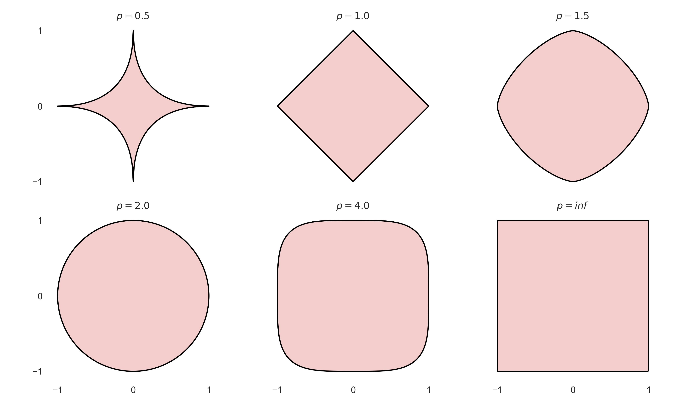
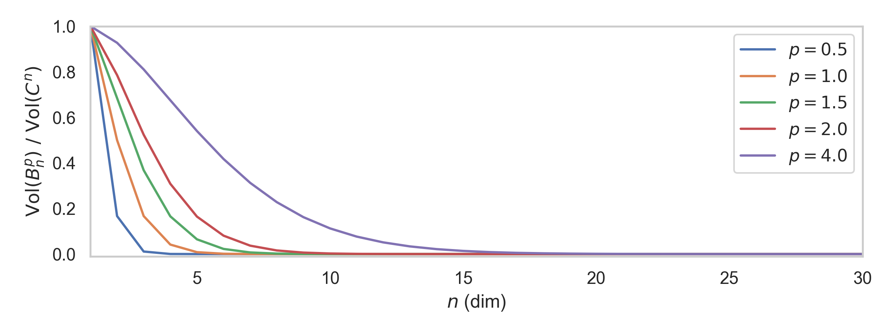
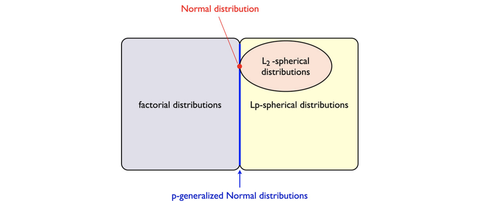

\(\text{Accept prob} = \mathrm{Vol}(B_p^n) \, / \, \mathrm{Vol}(C^n)\)

Spherical symmetry \(\Leftrightarrow\) " \(L_2\) -symmetry "
\[\mathcal{N}(x \mid 0, I) \propto e^{-\frac{\lVert x \rVert_2^2}{2}}\]
\(p\) - generalized Gaussian:
\[\mathcal{N}_p(x \mid 0, I) \propto e^{-\frac{\lVert x \rVert_p^p}{2}}\]

Theorem: \(U_{1:n - p} \sim \mathcal{B}^{n - p}_p\)